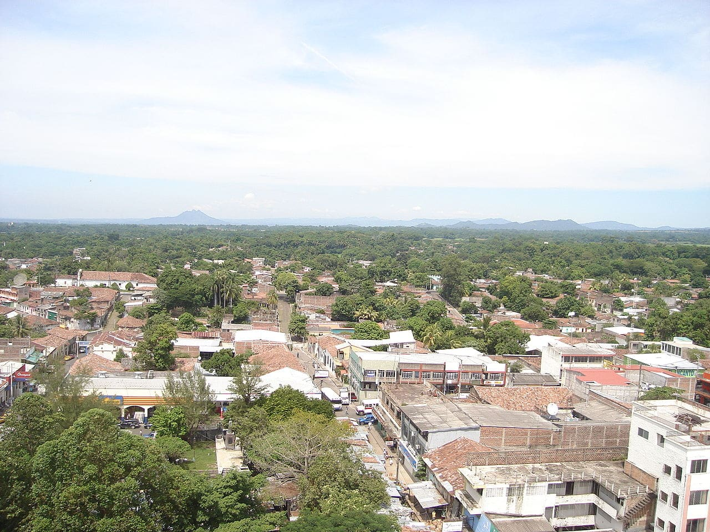
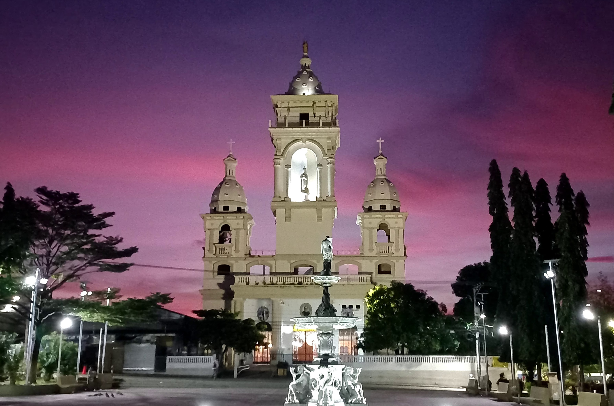

MAPA DE LA PAZ

Información
El departamento de La Paz está ubicado en la zona central de El Salvador y limita con los departamentos de San Salvador, La Libertad, Cuscatlán, San Vicente y Usulután, así como con el océano Pacífico al sur. Su cabecera departamental es Zacatecoluca, y su economía se basa en la agricultura, la ganadería y el comercio. Además, cuenta con una hermosa costa y diversos sitios de interés turístico.
Datos Históricos
La Paz fue fundado como departamento en 1852. Durante la época colonial, fue un territorio clave en la producción agrícola y en el comercio, gracias a su ubicación estratégica cerca del puerto de La Libertad. En el siglo XIX, Zacatecoluca fue un importante centro de actividad política y social, siendo cuna de personajes clave en la historia salvadoreña.
Lista de Municipios
- Zacatecoluca (cabecera departamental)
- San Pedro Masahuat
- San Luis Talpa
- San Juan Nonualco
- San Rafael Obrajuelo
- El Rosario
- Jerusalén
- Mercedes La Ceiba
- Olocuilta
- Paraíso de Osorio
- San Antonio Masahuat
- San Emigdio
- San Francisco Chinameca
- San Juan Talpa
- San Juan Tepezontes
- San Luis La Herradura
- San Miguel Tepezontes
- San Pedro Nonualco
- Santa María Ostuma
- Santiago Nonualco
- Tapalhuaca
Centros Turísticos
Uno de los principales atractivos turísticos de La Paz es el Estero de Jaltepeque, una extensa zona de manglares y canales donde se puede disfrutar del ecoturismo, paseos en lancha y la observación de aves. También destacan las playas de Costa del Sol, uno de los destinos turísticos más visitados en El Salvador, ideal para el surf y la recreación familiar.

playas
Playa Costa del Sol Es una de las playas más famosas y visitadas de El Salvador.

Ríos
Entre los principales ríos que atraviesan La Paz se encuentran el río Jiboa, uno de los más importantes del departamento y fuente de agua para la agricultura y consumo humano. También destacan el río Lempa, que bordea parte de su territorio, y el río Comalapa, que fluye hacia la costa del Pacífico.

Volcanes
El departamento de La Paz es hogar del Volcán de San Vicente, también conocido como Chinchontepec, que se encuentra en los límites con el departamento de San Vicente. Este volcán es el segundo más alto de El Salvador, con 2,130 metros sobre el nivel del mar, y ofrece vistas panorámicas impresionantes.

Personajes Célebres
Algunas figuras históricas y personajes importantes nacidos en La Paz incluyen: José Simeón Cañas Sacerdote y prócer de la independencia, luchó por la abolición de la esclavitud en Centroamérica.